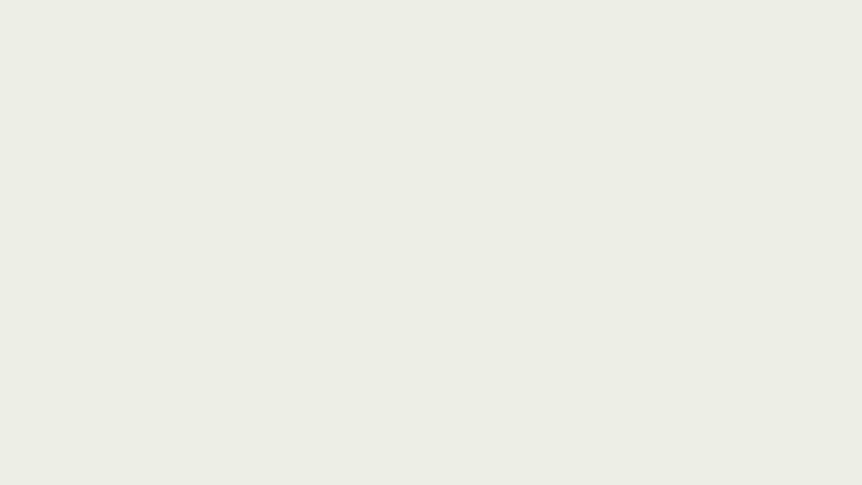
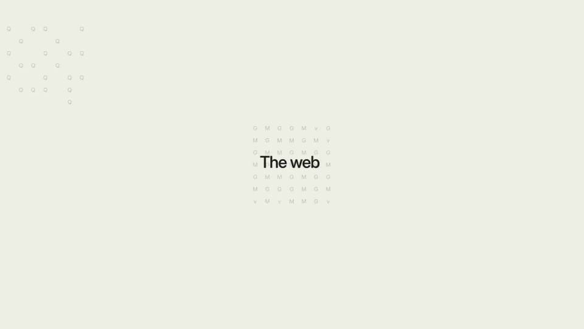
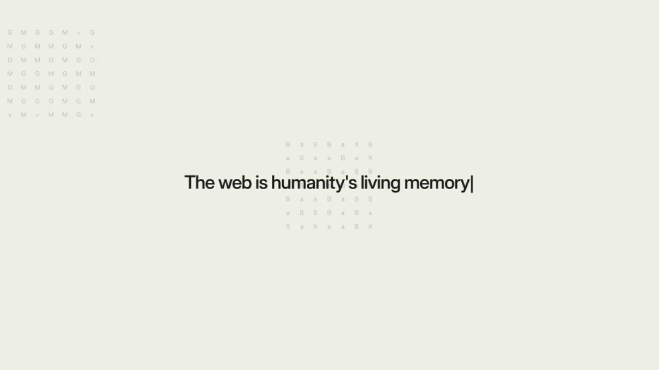
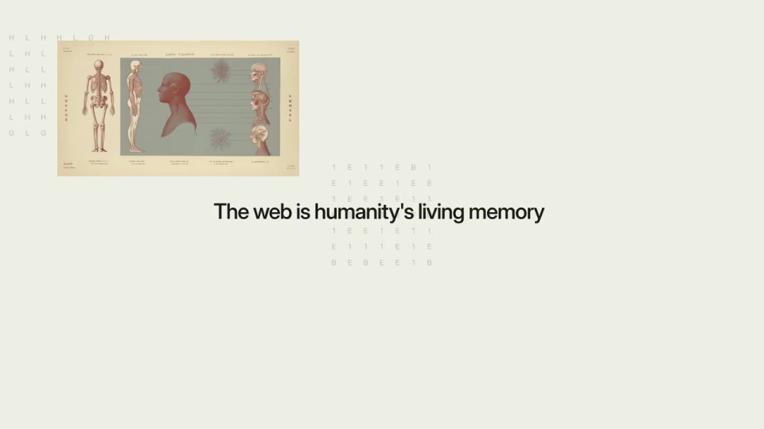

Parallel Web Systems / V335
九十年代浏览器拼贴
用一句关于网络记忆的短句作为中轴，先叠入知识插画，再叠入早期网页，让内容积累自然过渡到浏览器时代。
构图与编排 可播放 · 可替换内容
整体编排规则示例
查看 HTML 源码
<!doctype html><html lang="zh-CN"><meta charset="utf-8"><meta name="viewport" content="width=device-width,initial-scale=1"><title>九十年代浏览器拼贴 · sequence</title><style>html,body{margin:0;width:100%;height:100%;overflow:hidden;background:#eeeae0}canvas{display:block;width:100%;height:100%;object-fit:contain}</style><body data-mode="sequence"><canvas width="1000" height="600"></canvas><script src="data.js"></script><script src="common.js"></script><script src="scene.js"></script><script src="bridge.js"></script></body></html>画面元素打字游标主张句历史插画纸页早期网页浏览器窗
MOTION LANGUAGE
动作与构图
局部动作 · 构图规则
01
开头给文字留完整的纸面
奶油色底配深色文字，游标先出现，再从左向右输入一句话。句子居中偏上，图像加入前至少形成可以读懂的短语。
02
拼贴按媒介顺序加密
拼贴按媒介顺序加密规则示例
查看 HTML 源码
<!doctype html><html lang="zh-CN"><meta charset="utf-8"><meta name="viewport" content="width=device-width,initial-scale=1"><title>九十年代浏览器拼贴 · sequence</title><style>html,body{margin:0;width:100%;height:100%;overflow:hidden;background:#eeeae0}canvas{display:block;width:100%;height:100%;object-fit:contain}</style><body data-mode="clip" data-start="3" data-end="5.7"><canvas width="1000" height="600"></canvas><script src="data.js"></script><script src="common.js"></script><script src="scene.js"></script><script src="bridge.js"></script></body></html>解剖、自然与天文插画先作为纸片进入，随后换成早期网页和灰色浏览器边框。新窗口覆盖部分旧内容但保留边缘，密度越来越高，中心主张不必一直保持最前。
03
用素材家族替换，而不是随意填图
新主题准备三至五类有时间关系的资料：早期记录、图解、网页与工具。维持纸白、黑字、链接蓝与灰边框，数量通过叠放增加，不缩成规整九宫格。
SEQUENCE
段落与节奏
点击段落，定位到上方编排示意。




画面参考 · 离散静帧
KEEP THE RELATIONSHIPS
制作其他主题
- 替换知识史或产品史的资料；保留文字→纸面资料→网页窗口的积累。
制作约束
打字游标 / 主张句 / 历史插画 / 纸页 / 早期网页 / 浏览器窗
- 奶油色底配深色文字，游标先出现，再从左向右输入一句话。句子居中偏上，图像加入前至少形成可以读懂的短语。
- 解剖、自然与天文插画先作为纸片进入，随后换成早期网页和灰色浏览器边框。新窗口覆盖部分旧内容但保留边缘，密度越来越高，中心主张不必一直保持最前。
- 新主题准备三至五类有时间关系的资料：早期记录、图解、网页与工具。维持纸白、黑字、链接蓝与灰边框，数量通过叠放增加，不缩成规整九宫格。